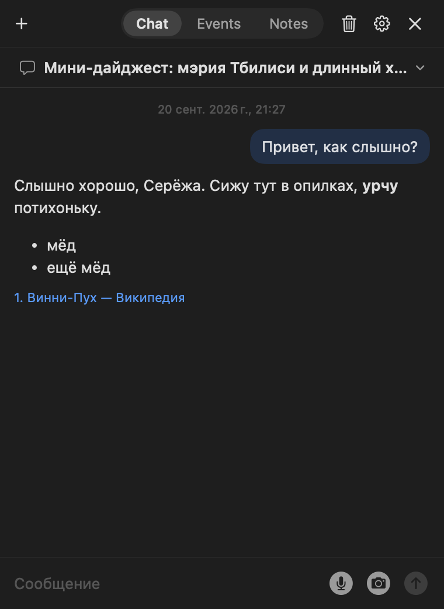
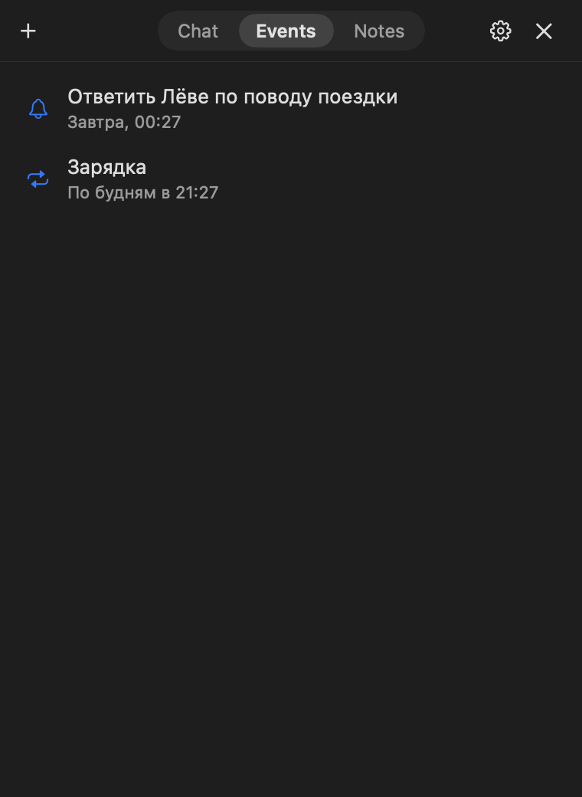
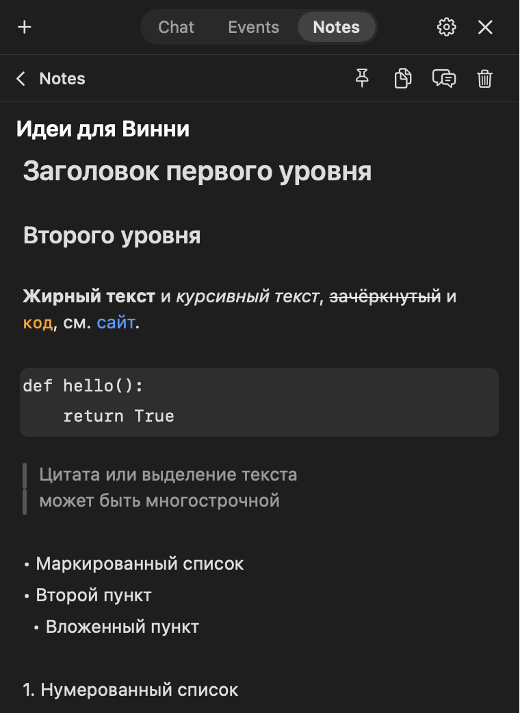

Всё, что умеет Winnie
Подробный список. Коротко — на главной, в деле — в сценариях.



🐻 Питомец
- Живёт поверх всех окон и рабочих столов, не забирая фокус у других приложений.
- Перетаскивается мышью, место запоминается; размер меняется в настройках или просьбой в чате.
- Клик открывает последний чат, наведение показывает кнопку New dialog.
- Значок в строке меню: показать или спрятать, новый чат, выбор модели, настройки.
- Глобальные шорткаты:
⌃⌥Space— показать или спрятать всё,⇧⌘E— диктовка. Оба меняются. - Состояния: покой, наведение, раздумье, речь, слушает, ошибка, перетаскивание, сон со снами, перекур в 16:20.
- Спрайты — обычные PNG в папке приложения: можно нарисовать и подложить свои.
💬 Чат
- Модели Claude Opus 5, Sonnet 5 и Haiku 4.5 — переключаются в меню и в настройках.
- Ответы печатаются на лету, оформляются Markdown: заголовки, списки, таблицы, код.
- Веб-поиск со списком источников под ответом; ссылку можно скопировать по наведению.
- Несколько чатов, названия в одно–три слова придумываются сами, хранение 30 дней, удаление по одному и всех сразу.
- Выделил текст в ответе — всплывает кнопка Copy.
- Окно меняет размер и запоминает его; закрывается по
Esc.
📸 Скриншоты и картинки
- Кнопка с камерой прячет чат, даёт выделить область экрана и возвращает снимок уже во вложении.
- Картинка из буфера вставляется по
⌘V. - Изображения уменьшаются до 1000 px по длинной стороне — экономит токены.
⏰ События
- Напоминания создаются обычной фразой; время понимается относительно текущего.
- Разовые и повторяющиеся, с понятными короткими названиями.
- Системное уведомление приходит, даже если Винни спрятан; медведь сам открывает чат и напоминает, не отбирая клавиатуру.
- Изменить, отложить и удалить можно через медведя: «отложи на час», «удали все напоминания».
- Пропущенные, пока приложение было закрыто, показываются при запуске.
📝 Заметки
- Хранятся как обычные Markdown-файлы — их можно открыть чем угодно.
- Редактор показывает готовый текст без значков разметки: заголовки, жирный, курсив, списки, цитаты, код, линии.
- Меню блоков по
/, панель форматирования при выделении, кликабельные чекбоксы, вставка картинок. - Закрепление, копирование, «обсудить в новом чате», дата последней правки.
- Медведь создаёт, дополняет и находит заметки сам; в сообщении на заметку или событие можно сослаться через
@.
🎙️ Голос
- Диктовка по кнопке или шорткату из любого приложения; распознавание идёт на устройстве.
- Озвучка ответов системным голосом, есть стилизация «как в мультике».
- Отдельно включается: отвечать вслух на голосовые вопросы, проговаривать напоминания.
- Бесплатно — никаких дополнительных подписок.
⚡ Быстрые действия
- Кнопки в пустом чате: подпись плюс полная инструкция для медведя.
- Переключатель «сразу» — отправлять по нажатию или подставлять в поле ввода.
- Порядок меняется перетаскиванием или просьбой в чате.
🧠 Память, характер, расходы
- «Запомни, что…» — заметка в памяти, которая действует во всех чатах; «забудь» — удаляет.
- Мастер-промпт с характером Винни открыт для редактирования, стандартный возвращается одной кнопкой.
- Экономный системный промпт с кэшированием, сжатые картинки, короткие названия чатов дешёвой моделью.
- Расходы по моделям за день, 7 и 30 дней и ссылка на пополнение баланса.